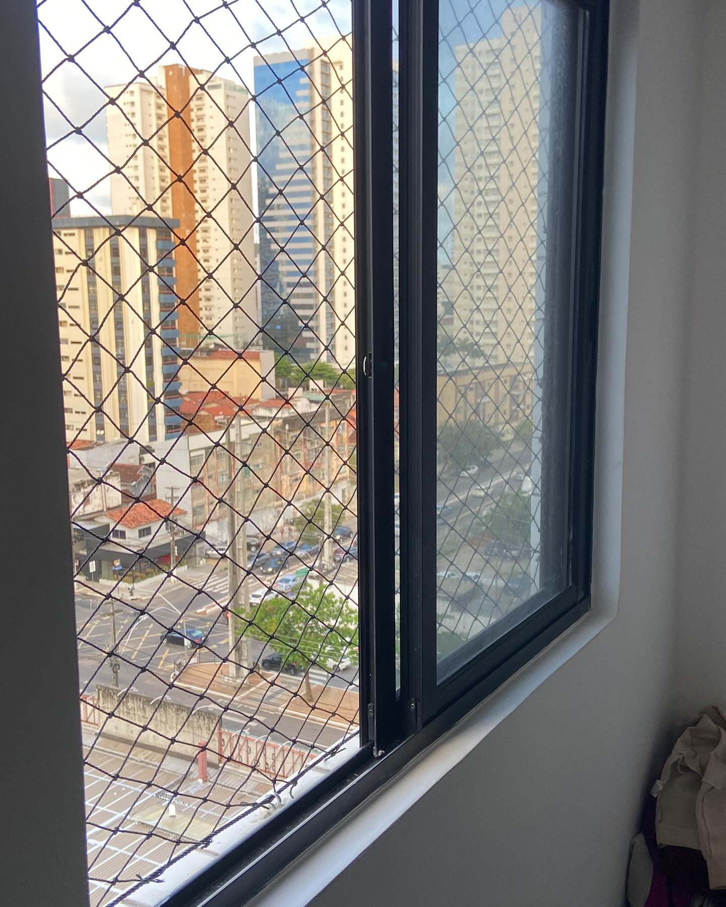
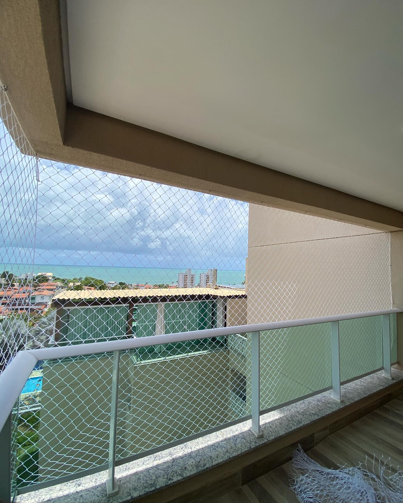
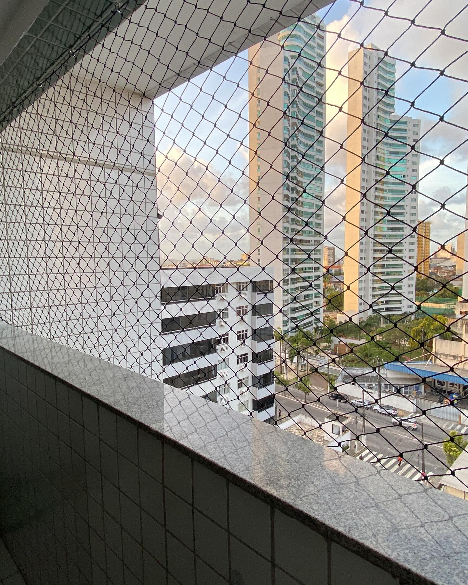
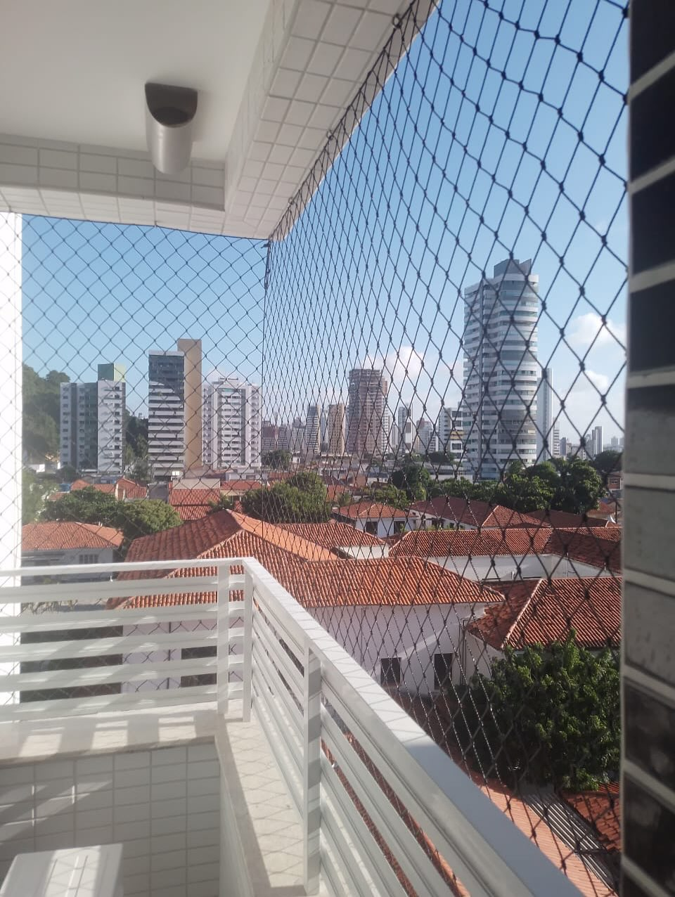
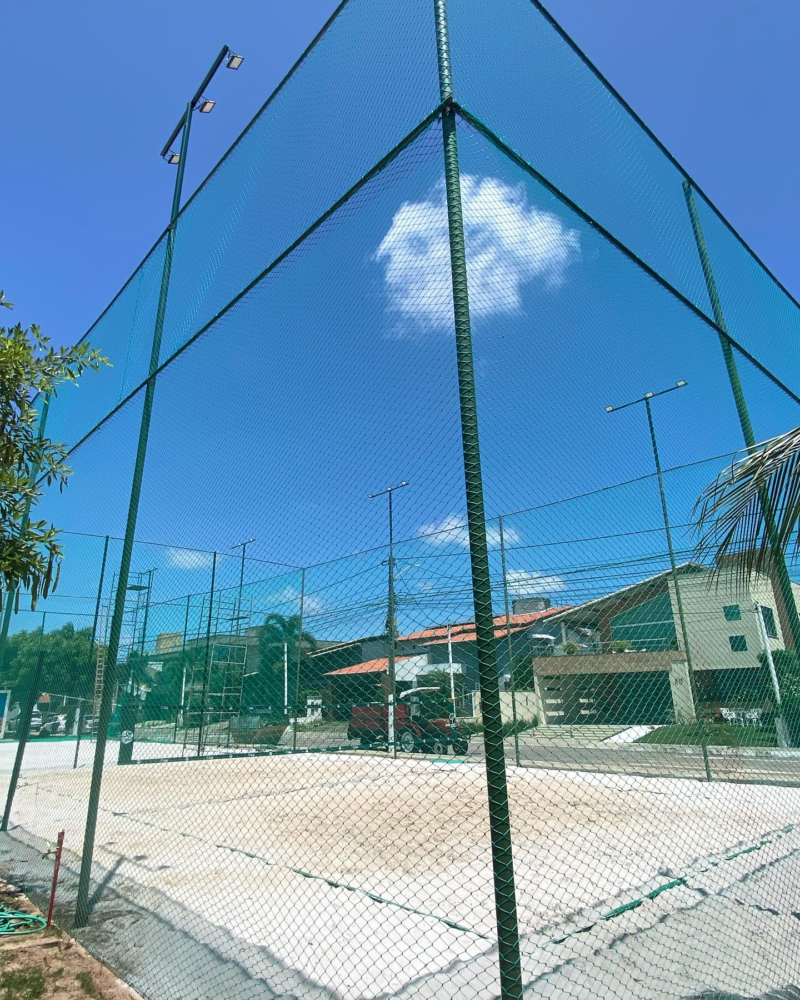
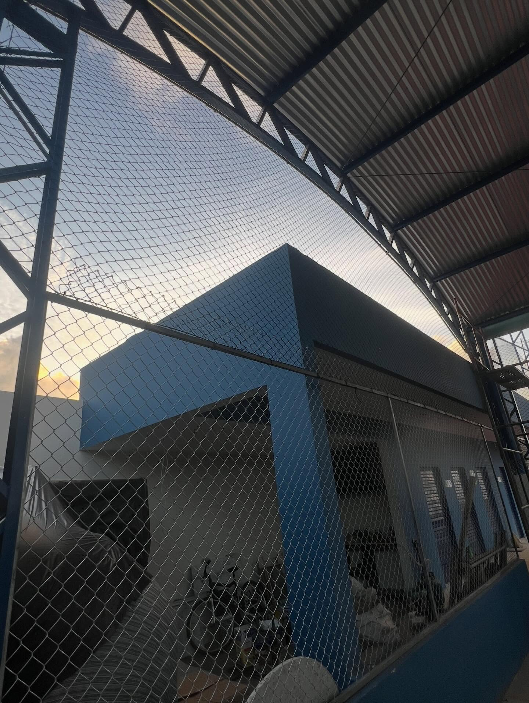
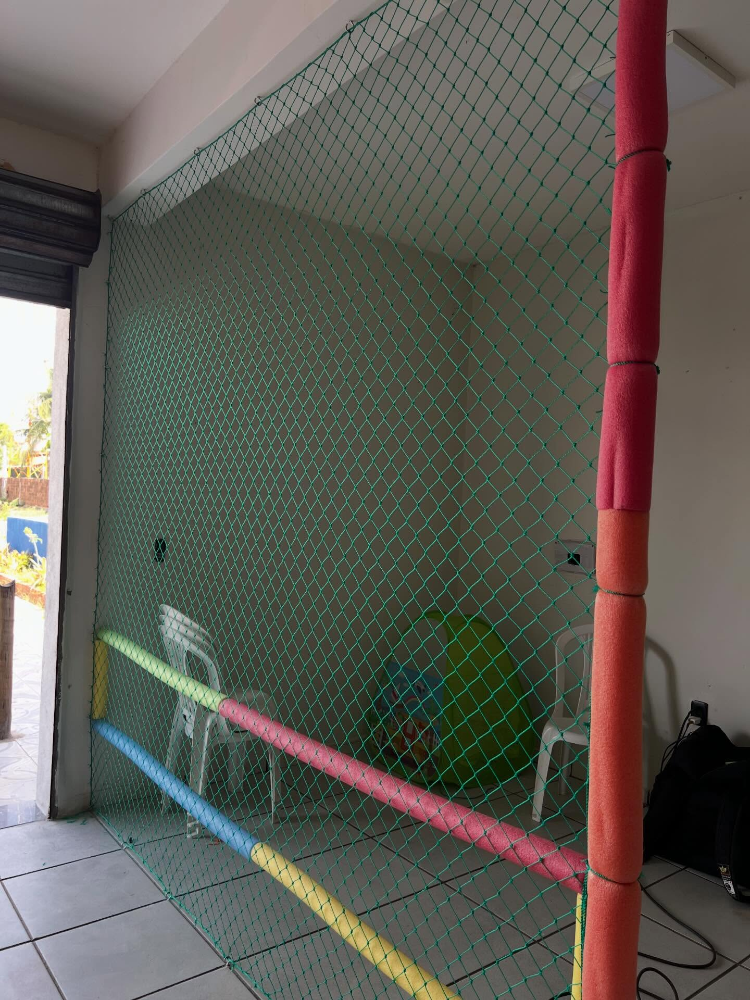

Redes de proteção para janelas
Proteção para janelas de casas e apartamentos, ajudando a prevenir acidentes e quedas.
Solicitar orçamentoRedes de proteção instaladas por profissionais para garantir a segurança da sua família, com qualidade e confiança.
Redes de proteção para casas, apartamentos, condomínios, escolas e empresas.

Proteção para janelas de casas e apartamentos, ajudando a prevenir acidentes e quedas.
Solicitar orçamento
Mais segurança para apartamentos e residências, protegendo espaços abertos.
Solicitar orçamento
Soluções de proteção para aumentar a segurança nas áreas de piscina.
Solicitar orçamento

Instalação de redes para delimitação e proteção de espaços esportivos.
Solicitar orçamento
Soluções personalizadas para diferentes ambientes de lazer.
Solicitar orçamento
Redes instaladas para ajudar a prevenir acidentes e proporcionar mais tranquilidade para toda a família.
Solicitar orçamentoFotografias ilustrativas de redes de proteção.
Redes de polietileno com proteção UV, desenvolvidas para oferecer resistência e durabilidade.
A empresa informa oferecer garantia de até 5 anos.
Profissionais preparados para realizar instalações com cuidado e qualidade.
Compromisso com uma instalação organizada e eficiente.
Orçamento gratuito e sem compromisso, com atendimento rápido.
Soluções para diferentes ambientes residenciais e comerciais.
A Inovatec Redes de Proteção RN trabalha oferecendo soluções de proteção para ambientes residenciais e comerciais.
Nosso compromisso é proporcionar mais segurança e tranquilidade por meio de materiais de qualidade, instalação profissional e atendimento personalizado.
Atendemos diferentes necessidades, desde janelas e sacadas até piscinas, escadas e quadras esportivas.
Na Inovatec, sua segurança é o que realmente importa!
Veja exemplos de redes de proteção em diferentes ambientes. Clique na foto para ampliar.
Estamos localizados em Extremoz, Rio Grande do Norte. Fale conosco pelo WhatsApp para confirmar o atendimento na sua localidade.
Instalamos redes de proteção em janelas, sacadas, varandas, escadas, piscinas, quadras esportivas e outras áreas que necessitam de proteção.
Trabalhamos com redes de polietileno com proteção UV, desenvolvidas para oferecer alta resistência e durabilidade.
Sim! A empresa oferece garantia de até 5 anos, conforme as condições aplicáveis ao serviço.
Sim! Atendemos residências, condomínios, escolas e empresas.
É simples! Entre em contato pelo nosso WhatsApp e solicite seu orçamento gratuito e sem compromisso.
A empresa trabalha com instalação rápida e limpa. O prazo depende das características e dimensões do ambiente.
Sim! As redes utilizadas possuem proteção UV.
Entre em contato com nossa equipe e encontre a solução ideal para seu ambiente. Atendimento rápido, personalizado e orçamento gratuito, sem compromisso.
FALAR COM UM ESPECIALISTAInovatec Redes de Proteção RN